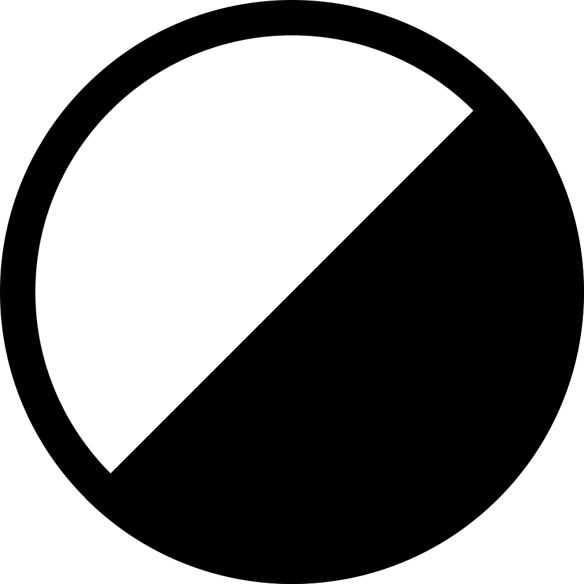
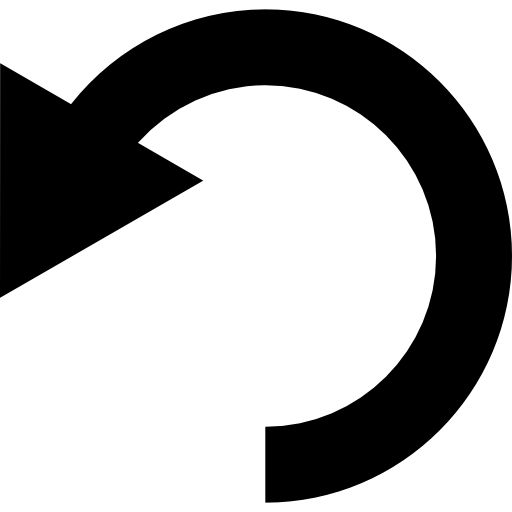
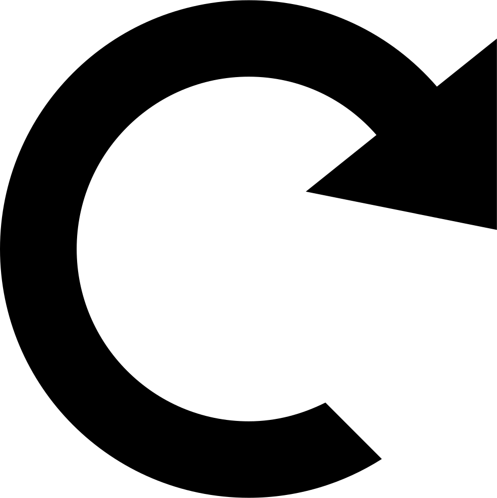

Liver Segmenter
Select New Study
Select New Series
Delete This Series
Upload Files
Download Files
Save Seg Mask
to Data Store
Load Existing
Segmentation Mask
Create Segmentation
from Machine Model

Active Segment:
Active Labelmap:
1
2

